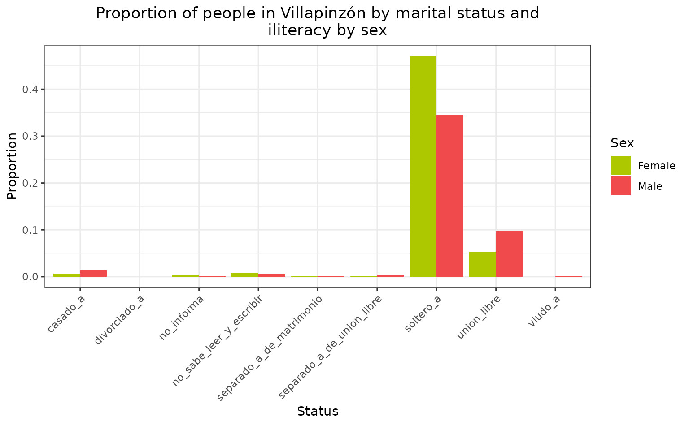

A Deep Dive into Colombian Demographics Using ColOpenData
Source:vignettes/demographic_data.Rmd
demographic_data.RmdColOpenData can be used to access open demographic data from Colombia. This demographic data is retrieved from the National Administrative Department of Statistics (DANE). The demographic module allows you to consult demographic data from the National Population and Dwelling Census (CNPV) of 2018 and Population Projections.
The available CNPV information is divided in four categories: households, persons demographic, persons social and dwellings. The population projections information presents data from 1950 to 2070 for a national level, from 1985 to 2050 for a departmental level and from 1985 to 2035 for a municipal level. All data documentation can be accessed as explained at Documentation and Dictionaries.
In this vignette you will learn:
- How to download demographic data using ColOpenData
- How to filter, group, mutate and aggregate demographic data
- How to visualize data using ggplot2
As the goal of this vignette is to show some examples on how to use the data, we will load some specific libraries but that does not mean they are required to use the data in all cases.
In order to access its documentation we need to use the function
list_datasets() and indicate as a parameter the module we
are interested in. It is important to take a good look at this to have a
clearer understanding of what we count with, before just throwing
ourselves to work with the data. Now, we should start by loading all
necessary libraries.
Disclaimer: all data is loaded to the environment in the user’s R session, but is not downloaded to user’s computer.
Initial Exploration: Basic Data Handling with ColOpenData
Documentation access
First, we have to access the demographic documentation, to check available datasets.
datasets_dem <- list_datasets("demographic")
head(datasets_dem)
#> name group source year level category
#> 11 DANE_CNPVH_2018_1HD demographic DANE 2018 department households
#> 12 DANE_CNPVH_2018_1HM demographic DANE 2018 municipality households
#> 13 DANE_CNPVH_2018_2HD demographic DANE 2018 department households
#> 14 DANE_CNPVH_2018_2HM demographic DANE 2018 municipality households
#> 15 DANE_CNPVH_2018_3HD demographic DANE 2018 department households
#> 16 DANE_CNPVH_2018_3HM demographic DANE 2018 municipality households
#> description
#> 11 Number of households with persons under 15 years of age and number of persons under 15 years of age, by department and area
#> 12 Number of households with persons under 15 years of age and number of persons under 15 years of age, by municipality and area
#> 13 Number of households with senior citizens and number of persons aged 60 and over, by department and area
#> 14 Number of households with senior citizens and number of persons aged 60 and over, by municipality and area
#> 15 Households by headship, by department and area
#> 16 Households by headship, by municipality and areaAfter checking the documentation, we can load the data we want to
work with. To do this, we will use the
download_demographic() function that takes by parameter the
dataset name, presented in the documentation. For this first example we
will focus on a CNPV dataset.
Data load
public_services_d <- download_demographic("DANE_CNPVV_2018_8VD")
#> Original data is retrieved from the National Administrative Department
#> of Statistics (Departamento Administrativo Nacional de Estadística -
#> DANE).
#> Reformatted by package authors.
#> Stored by Universidad de Los Andes under the Epiverse TRACE iniative.
head(public_services_d)
#> codigo_departamento departamento area servicio_publico disponible
#> 1 00 Total nacional total energia_electrica si
#> 2 00 Total nacional total energia_electrica no
#> 3 00 Total nacional total energia_electrica sin_informacion
#> 4 00 Total nacional cabecera energia_electrica si
#> 5 00 Total nacional cabecera energia_electrica no
#> 6 00 Total nacional cabecera energia_electrica sin_informacion
#> total
#> 1 12984126
#> 2 496603
#> 3 0
#> 4 10485896
#> 5 81579
#> 6 0As it can be seen above, public_services_d presents information regarding availability of public services in the country at the department level. Now, with this data we could, for example, find the proportion of dwellings that have access to a water supply system (WSS) by department and plot it.
Data filter and plot
First we will subset the data so it presents the information regarding the WSS by department.
wss <- public_services_d %>%
filter(
area == "total_departamental",
servicio_publico == "acueducto"
) %>%
select(departamento, disponible, total)With the subset, we can calculate the total counts by department.
Then, we can calculate the proportions of “yes” (“si”) by department.
proportions_wss <- wss %>%
filter(disponible == "si") %>%
left_join(total_counts, by = "departamento") %>%
mutate(proportion_si = total / total_all)For plotting purposes, we will change the name of “San Andrés”, since the complete name is too long.
proportions_wss[28, "departamento"] <- "SAPSC"Finally, we can plot the results
ggplot(proportions_wss, aes(
x = reorder(departamento, -proportion_si),
y = proportion_si
)) +
geom_bar(stat = "identity", fill = "#10bed2", color = "black", width = 0.6) +
labs(
title = "Proportion of dwellings with access to WSS by department",
x = "Department",
y = "Proportion"
) +
theme_minimal() +
theme(
axis.text.x = element_text(angle = 45, hjust = 1),
plot.title = element_text(hjust = 0.5)
)
Data Integration: Combining Datasets for Enhanced Analysis
Also, with the CNPV data, we could merge data from the different categories and compare information. For example, we would download a dataset from the persons demographic category and another one from persons social. The first one presents information regarding population’s literacy and the second one regarding its marital status. The following datasets might take a while to download.
Data load
literacy <- download_demographic("DANE_CNPVPD_2018_16PM")
#> Original data is retrieved from the National Administrative Department
#> of Statistics (Departamento Administrativo Nacional de Estadística -
#> DANE).
#> Reformatted by package authors.
#> Stored by Universidad de Los Andes under the Epiverse TRACE iniative.
marital_status <- download_demographic("DANE_CNPVPS_2018_7PM")
#> Original data is retrieved from the National Administrative Department
#> of Statistics (Departamento Administrativo Nacional de Estadística -
#> DANE).
#> Reformatted by package authors.
#> Stored by Universidad de Los Andes under the Epiverse TRACE iniative.For this example, we will focus on a specific municipality, examining the total area and specifically concentrating on the age group between 15 and 24 years old. Since we want to compare both datasets simultaneously, it’s important to first ensure they have the same population count under identical conditions. Most columns in the demographic datasets contain a total value, which aggregates data across all conditions. For instance, the “sex” column includes “male”, “female”, and “total”, representing both genders combined. Similarly, the “marital status” column’s ‘total’ value encompasses the entire population, irrespective of their marital status.
Data check
Since the age group in literacy is complete, we can just filter using the desired age range and the total counts for other variables, including area, sex and ability to read.
lit <- literacy %>%
filter(
municipio == "Villapinzón",
grupo_de_edad == "entre_15_y_24_anos",
area == "total",
sabe_leer_y_escribir == "total",
sexo == "total"
) %>%
select(sexo, total)
head(lit)
#> sexo total
#> 1 total 2911We will now filter marital status for people between 15 and 24 years. This dataset age groups are divided from 15 to 19 and from 20 to 24 years old, so we will need to merge the two groups. To do this, we can group by a common variable, like sex and add as follows:
ms_15_24 <- marital_status %>%
filter(
municipio == "Villapinzón",
area == "total",
grupo_de_edad %in% c("15_a_19", "20_a_24"),
estado_civil == "total",
sexo == "total"
) %>%
group_by(sexo) %>%
summarise(total = sum(total)) %>%
select(sexo, total)
head(ms_15_24)
#> # A tibble: 1 × 2
#> sexo total
#> <chr> <dbl>
#> 1 total 2911Now that we know that both data sets contain the same counts, we can start to look at the specific information we want. For the literacy data set, we would focus on the people that do not know how to read neither write.
Data filter and plot
We can filter the literacy data. For this purpose we will filter the column “sabe_leer_y_escribir” for the value “no”. We will also create a column containing the proportion of people that cannot read compared to the total population within the age range.
lit_filt <- literacy %>%
filter(
municipio == "Villapinzón",
sabe_leer_y_escribir == "no",
grupo_de_edad == "entre_15_y_24_anos",
area == "total"
) %>%
mutate(
estado = "no_sabe_leer_y_escribir",
proporcion = total / lit$total
) %>%
select(estado, sexo, proporcion)To filter the marital status dataset we will filter by the two age groups again. We will group by marital status and sex, sum by the total counts and create a column containing the proportion of each marital status compared to the population within the age group.
ms_15_24_filt <- marital_status %>%
filter(
municipio == "Villapinzón",
area == "total",
grupo_de_edad %in% c("15_a_19", "20_a_24")
) %>%
group_by(estado_civil, sexo) %>%
summarise(total = sum(total)) %>%
mutate(proporcion = total / ms_15_24$total) %>%
select(estado_civil, sexo, proporcion) %>%
rename(estado = estado_civil)
#> `summarise()` has grouped output by 'estado_civil'. You can override using the
#> `.groups` argument.Finally, we can merge the two datasets and plot the outcome.
merged_df <- bind_rows(lit_filt, ms_15_24_filt) %>%
filter(
sexo != "total",
estado != "total"
)
ggplot(merged_df, aes(x = estado, y = proporcion, fill = sexo)) +
geom_bar(stat = "identity", position = "dodge") +
scale_fill_manual(
values = c(mujer = "#f04a4c", hombre = "#aec800"),
labels = c("Female", "Male")
) +
labs(
title = "Proportion of people in Villapinzón by marital status and
iliteracy by sex",
x = "Status",
y = "Proportion",
fill = "Sex"
) +
theme_bw() +
theme(
axis.text.x = element_text(angle = 45, hjust = 1),
plot.title = element_text(hjust = 0.5)
)